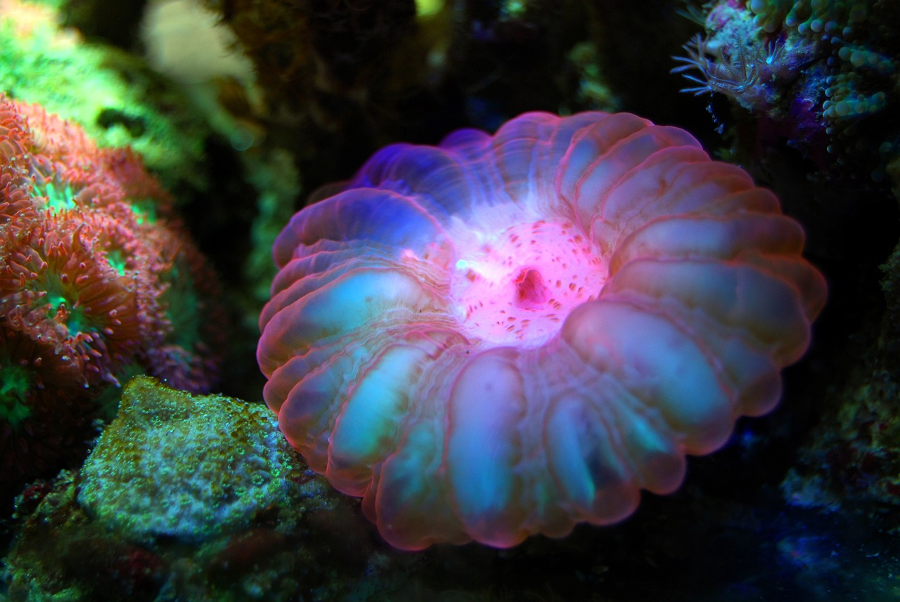

About
Us
Ypark，這是一個唯一無二的水族館，充滿著對遠方未知海洋世界的好奇與探索精神。
我們相信，大自然的奧秘中蘊藏著無限的驚奇，而海洋是最激動人心的探險之地。
Ypark的使命是向大眾展現海洋的神奇之美，啟發人們對自然的愛與敬畏。
我們致力於創造具教育、娛樂和啟發性的環境，讓訪客深入了解海洋生態系統，並激發對脆弱海洋環境的保護意識。
教育與探索
在Ypark，我們呈現各式引人入勝的展示和互動活動，帶您近距離觀察世界各地的海洋生物，從繽紛多彩的熱帶魚到神秘深海生物，每一個都獨具特色。
我們的專家團隊滿懷熱情，致力於照顧這些生物，確保它們在最佳狀態下茁壯成長。
此外，Ypark也是一個教育中心，為家庭、學校和社區提供教育資源，我們舉辦各類有趣的工作坊、講座和活動，以幫助人們更深入地了解海洋和環保議題。
我們深信透過教育，我們能共同努力保護和維護我們珍愛的海洋。
在Ypark，館內有許多稀有未知海洋生物等待著您的發現，歡迎您成為我們的一份子，一同探索、學習和珍惜這個大自然的奇蹟。
Marine
Ecology
Protection

水族館與生態保護
在這個快速變遷的世界中，生態保護變得比以往任何時候都更加重要。
在我們的水族館，我們認為教育是保護自然界的關鍵。
我們致力於啟發和教育我們的訪客，讓他們更深刻地了解地球上不可或缺的生態系統，並激發他們採取行動的意願。
生態保護不僅僅是一個主題，而是我們的核心價值觀。我們相信，每一個生物都在我們地球上擁有一個不可或缺的角色，而保護他們的家園就是保護我們自己的未來。
這就是為什麼我們努力通過互動展示、教育活動和專業知識，向訪客傳遞生態保護的重要性。
守護海洋計畫
當您參觀我們的水族館時，您將有機會近距離觀察各種令人驚歎的海洋生物。
但不僅如此，我們還提供多種教育計劃，從學校團體到家庭，無論您的年齡如何，都有機會參與。我們的目標是啟發您成為地球的守護者，鼓勵您參與保護我們珍愛的環境。
生態保護不僅僅是一個單一行業或組織的責任，而是全人類的共同使命。在我們的水族館，我們希望成為您開始這一使命的地方。
讓我們一同學習、一同行動，保護我們美麗而脆弱的地球，為我們的子孫留下一個更美好的未來。歡迎加入我們，成為生態保護的推動者。

我們的使命：
我們必須攜手努力，為我們的海洋發聲，制定可持續的保護政策，實踐環保行動。從每一個人的日常生活開始，減少使用一次性塑膠，支持海洋保育項目，以及參與社區清潔活動。每一個小小的舉動，都是對我們海洋的一份珍愛。
每一個浪花背後都有著無數的生命，從微小的浮游生物到 majestic
的大型哺乳動物，它們構成了地球生態的獨特之處。然而，氣候變遷、過度捕撈、塑膠污染和海洋酸化等問題正在迅速威脅著這片神秘的藍色領域。